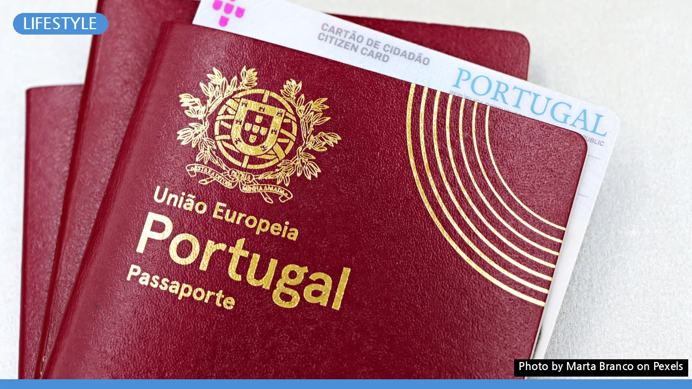
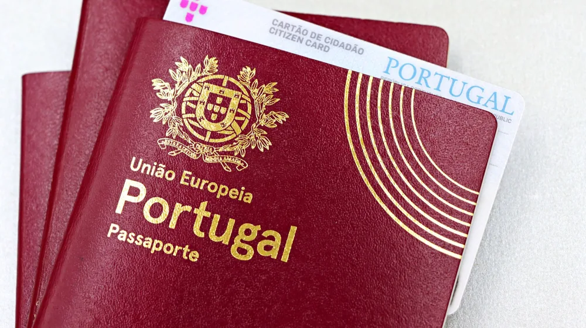

여권 재발급, 놓치지 말아야 할 3가지! 초보자도 쉽게 따라하는 가이드
사진: Marta Branco / Pexels (무료 이미지, 출처 표기)
여권 재발급, 어디서부터 시작해야 할지 막막하셨나요?

여권 유효기간 만료가 다가오거나 갑작스러운 여권 분실, 또는 개인 정보 변경으로 재발급이 필요할 때, 복잡하게 느껴지는 절차 때문에 고민이 많으셨을 겁니다. 이 글에서는 2026년 11월 기준으로 여권 재발급에 필요한 모든 정보를 자세하고 친절하게 안내해 드립니다. 온라인과 방문 신청 중 어떤 방법이 자신에게 유리한지 비교하고, 필요한 서류부터 수수료, 수령 방법까지 한 번에 정리해 드릴게요.
여권 재발급, 언제 신청해야 할까?
가장 일반적인 여권 재발급 사유는 유효기간 만료입니다. 대부분의 국가에서는 입국 시 여권 유효기간이 6개월 이상 남아있을 것을 요구하므로, 출국 예정이라면 여권 만료 6개월 전에는 재발급을 신청하는 것이 좋습니다.
이외에도 여권을 분실했거나 훼손된 경우, 개인 정보(이름, 주민등록번호 등)가 변경된 경우, 여권 내 사증면(비자 스탬프를 찍는 페이지)이 부족한 경우에도 재발급을 신청해야 합니다. 2026년 11월 현재, 대한민국은 차세대 전자여권(폴리카보네이트 재질로 내구성과 보안성이 강화된 여권)을 발급하고 있습니다.
온라인 vs 방문 신청, 나에게 맞는 방법은?
여권 재발급은 크게 온라인 신청과 방문 신청 두 가지 방법이 있습니다. 자신의 상황에 맞는 방법을 선택하여 시간을 효율적으로 활용할 수 있습니다.
온라인 신청
- 대상: 유효기간이 남아있는 전자여권을 재발급하는 만 18세 이상 본인 (여권 정보 변경이 없는 경우에 한함).
- 장점: 언제 어디서든 PC나 모바일로 편리하게 신청할 수 있어 시간을 절약할 수 있습니다.
- 단점: 정부24 웹사이트를 통해 신청하며, 공인인증서(공동인증서)가 필수입니다. 여권 사진 규정이 매우 까다로우므로 정확하게 맞춰서 업로드해야 합니다. 또한, 온라인 신청이라도 새 여권 수령은 반드시 신청자가 직접 기관에 방문해야 합니다.
방문 신청
- 대상: 모든 여권 재발급의 경우 (첫 여권 발급, 여권 훼손/분실, 정보 변경, 18세 미만 미성년자, 온라인 신청 불가 대상 등).
- 장점: 현장에서 담당 공무원의 도움을 받아 서류를 작성하고 사진 규정 검토 및 보완을 받을 수 있습니다. 긴급 여권 발급 등 특수한 상황에도 유리합니다.
- 단점: 여권 사무 대행 기관(시청, 구청 등)에 직접 방문해야 하며, 대기 시간이 발생할 수 있습니다.
두 가지 방법을 아래 표로 비교하여 자신에게 더 적합한 방법을 선택해 보세요.
필수 준비물 체크리스트와 수수료 안내
여권 재발급에 필요한 공통 준비물과 함께 개인 상황에 따른 추가 준비물을 미리 확인하여 방문 또는 온라인 신청 시 불편함이 없도록 준비해야 합니다.
공통 준비물
- 여권용 사진 1매: 최근 6개월 이내 촬영한 사진으로, 외교부의 여권 사진 규정(외교부 여권 안내 홈페이지 참조)을 엄격히 준수해야 합니다. 온라인 신청 시에는 사진 파일을 준비합니다.
- 신분증: 주민등록증, 운전면허증 등 유효한 신분증을 지참해야 합니다.
- 기존 여권: 유효기간이 남아있는 여권을 재발급하는 경우 기존 여권을 반납해야 합니다.
- 수수료: 2026년 11월 기준으로, 10년 유효기간의 58면 여권은 53,000원, 26면 여권은 50,000원입니다. 기타 유효기간이나 긴급 여권의 경우 수수료가 달라질 수 있으므로, 정확한 금액은 외교부 여권 안내 홈페이지나 방문할 기관에서 다시 확인하는 것이 좋습니다.
상황별 추가 준비물
- 여권 분실 시: 여권 분실 신고서를 작성해야 합니다. 이는 방문 신청 시 현장에서 작성 가능합니다.
- 18세 미만 미성년자: 법정대리인의 동의서, 인감증명서, 법정대리인의 신분증 등이 필요합니다. 가족관계증명서 등 추가 서류를 요구할 수 있으니 미리 확인하세요.
- 병역 의무자: 25세 이상 병역 미필 남성의 경우, 국외여행 허가서를 제출해야 합니다.
새 여권 수령, 얼마나 걸리고 어떻게 받아야 할까?
여권 재발급 신청 후 새 여권을 수령하기까지는 일반적으로 2~3주 정도 소요됩니다. 신청량이 많은 성수기나 특정 시기에는 발급 기간이 다소 지연될 수 있으므로, 출국 계획이 있다면 여유를 두고 신청하는 것이 현명합니다. 현재 발급 진행 상황은 외교부 여권 안내 홈페이지에서 조회할 수 있습니다.
새 여권은 신청 시 지정한 여권 사무 대행 기관에 본인이 직접 방문하여 수령해야 합니다. 대리 수령은 원칙적으로 불가능하지만, 질병이나 장애 등 특별한 사유가 인정되는 경우에 한해 위임장과 대리인 신분증을 지참하여 대리 수령이 허용될 수 있습니다. 여권을 수령하면 이름, 생년월일, 사진 등 개인 정보가 정확한지 반드시 확인해야 합니다.
재발급 시 꼭 알아둘 주의사항
여권 재발급은 비교적 간단한 절차이지만, 몇 가지 주의할 점을 미리 알아두면 불필요한 문제를 예방할 수 있습니다.
- 기존 여권의 효력: 기존 여권의 유효기간이 남아있더라도, 새 여권이 발급되면 기존 여권은 즉시 무효 처리되고 회수됩니다. 기존 여권에 유효한 비자나 출입국 스탬프 등 중요한 정보가 있다면, 새 여권 발급 전에 해당 기관에 문의하여 대처 방안을 확인해야 합니다.
- 여권 사진 규정: 여권 사진은 규격이 엄격합니다. 배경색, 얼굴 방향, 표정, 안경 착용 여부 등 세세한 규정을 지키지 않으면 반려될 수 있습니다. 사진 전문 스튜디오에서 '여권 사진용'으로 촬영하는 것을 권장합니다.
- 로마자 성명: 한 번 결정된 여권의 로마자 성명(영문 이름)은 혼인, 개명 등 특별한 사유 없이는 변경하기 어렵습니다. 해외에서 사용할 이름이므로 신중하게 결정하고, 기존 여권과 동일하게 사용하는 것이 일반적입니다.
- 해외 체류 중 재발급: 해외에 체류 중이라면 해당 국가의 대한민국 공관(대사관, 영사관)에서 여권 재발급을 신청할 수 있습니다. 국내 재발급보다 시간이 더 소요될 수 있으므로, 귀국 전 미리 준비하거나 여유 있게 신청해야 합니다.
자주 묻는 질문(FAQ)
여권 재발급에 대해 자주 궁금해하는 질문들을 모아 답변해 드립니다.
- Q: 여권 유효기간이 만료되었는데도 재발급 받을 수 있나요?
A: 네, 여권 만료 여부와 상관없이 재발급 신청이 가능합니다. 다만, 만료일 이전에 신청하는 것이 해외여행 계획 등에 차질을 빚지 않아 좋습니다. - Q: 급하게 여권이 필요한데 더 빨리 받을 수 있는 방법은 없나요?
A: 여권 사무 대행 기관에 따라 긴급 여권 발급 서비스(단수 여권)를 제공하기도 합니다. 하지만 이는 특정 사유(긴급 출국, 질병, 사망 등)에만 해당하며, 모든 국가에서 단수 여권을 인정하는 것은 아니므로 반드시 외교부나 해당 기관에 확인해야 합니다. (2026년 11월 기준) - Q: 예전처럼 일반 여권(비전자 여권)으로 재발급받을 수는 없나요?
A: 2026년 11월 현재, 대한민국은 차세대 전자여권(폴리카보네이트 재질)만 발급하고 있습니다. 따라서 일반 여권으로는 재발급이 불가능하며, 모든 여권은 전자여권으로 새로 발급받게 됩니다.
🔗 이 글도 함께 보면 좋아요: 홈텐딩, 어렵다고요? 초보자를 위한 최소 준비물부터 시작 가이드